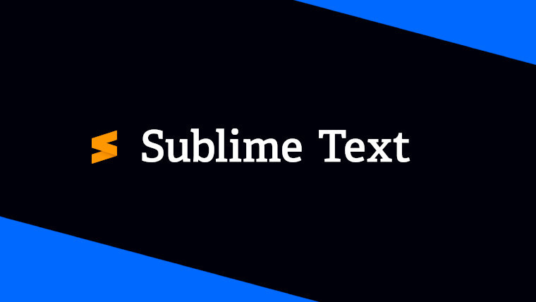
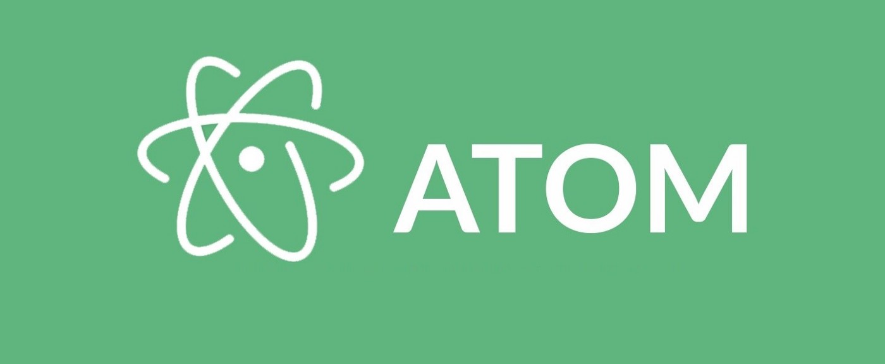
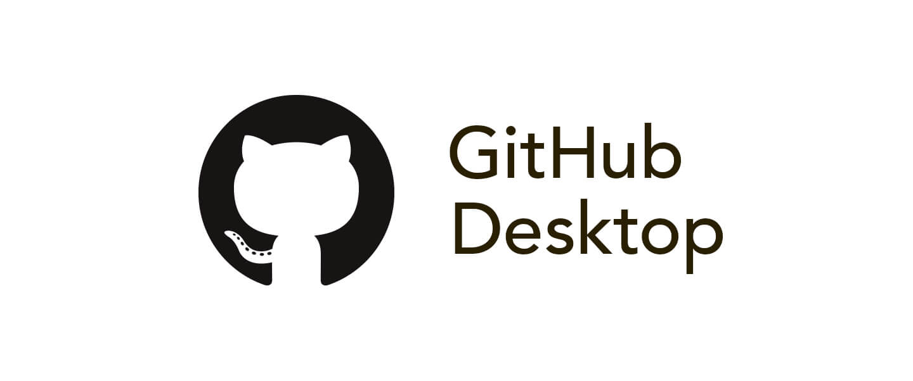

Notepad++
Notepad++ est un très bon IDE pour débuter, il est très simple à prendre en main et facile à comprendre, surtout quand vous avez un problème, vous aurez toujours de l'aide sur internet. En plus, il est gratuit !

Sublim Text
Sublim Text est un éditeur de texte (comme Notepad++) simple et raffiner, il réussira à vous guidez pour vos projets, son inconvénient (présent aussi sur Notepad++) c'est que c'est uniquement un éditeur de texte et pas un réel IDE, ce qui posera problème si vous souhaitez être guider par l'auto complétation par exemple.

Atom
Avec Atom, on est pile entre un vrai gros IDE (que je vais vous présentez juste après) et un éditeur de texte (comme au dessus). Cet IDE simple à prendre en main et simple d'accès vous donneras l'accès à quelques plug-ins tel que l'auto complétation (comme on en parlait juste avant) ou bien même son incroyable intégration à Github, pouvoir upload directement son code dessus pour travailler en collaboration par exemple.

Visual Studio Code
Si vous souhaitez être un vrai professionnel, il vous faut Visual Studio Code, ce logiciel enporte la quasi totalité des langages et plug-ins disponibles sur notre planête ! Malgré des petits problèmes de compactibilité sur certaines API (Interface de programmation), le logiciel reste une base, tout développeur qui se respecte, à ce logiciel. Personnellement j'utilise actuellement ce logiciel pour faire l'entièreté de ce site et c'est l'outil le plus pratique possible.

Github Desktop
Github Desktop est comme son nom l'indique, l'IDE de Github eux même. Pour être honnête, c'est un bon IDE, surtout si vous souhaitez avoir toute l'expérience de Github intégrée à un logiciel mais il lui manque beaucoup d'option et de compréhension, ce logiciel est complexe à prendre en main, surtout pour ce qu'il offre qui est uniquement les options de Github.